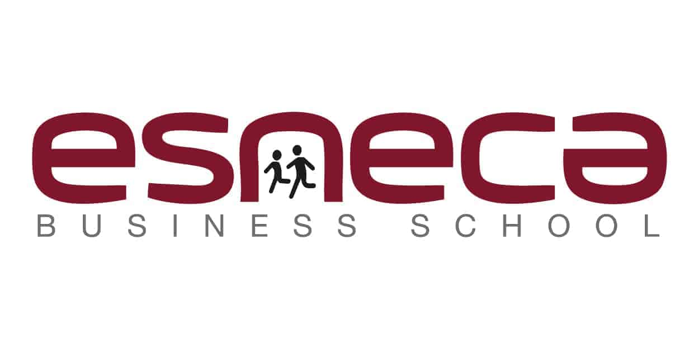

| Logotipo |
Institución |
Título |
Periodo |
Contenido |
|  |
ESNECA Business School |
Máster Acreditación de laboratorios ISO 17025 600 horas, Tecnología/Técnico de control de calidad |
sept. 2021 - abr. 2022 |
Titulación: Máster Acreditación de laboratorios ISO 17025 600 horas, Tecnología/Técnico de control de calidad.
Aptitudes: ISO 17025, análisis de riesgos, análisis de procesos y planteamiento de acciones correctivas.
|
 |
Euroinnova International Online Education |
Good Manufacturing Practices (avanzado) 100 horas, Farmacia |
Marzo 2021 - Julio 2021 |
Titulación: 9,6. Contenido del curso: Unidad Didáctica 1. INTRODUCCIÓN A LAS NORMAS DE CORRECTA FABRICACIÓN, ...
Aptitudes: ISO 13485, análisis de riesgos, análisis de procesos y planteamiento de acciones correctivas.
|
|
Euroinnova International Online Education |
Curso de experto en Ensayos microbiológicos, Microbiología médica y bacteriología |
Septiembre 2020 - Febrero 2021 |
Titulación: 9,26. Contenido del curso: Curso de ensayos microbiológicos: 1. Estudio preanalítico para elección de metodología en muestreo, ...
Aptitudes: Reconocimiento de especies patógenas de microorganismos.
|
 |
CETIC |
Curso de Sistemas de Gestión Ambiental |
Septiembre 2014 - Marzo 2015 |
Curso impartido PREOCA, donde se hace una revisión completa y detallada sobre cómo gestionar un sistema ISO 14001, EMAS y EKOSCAN.
|